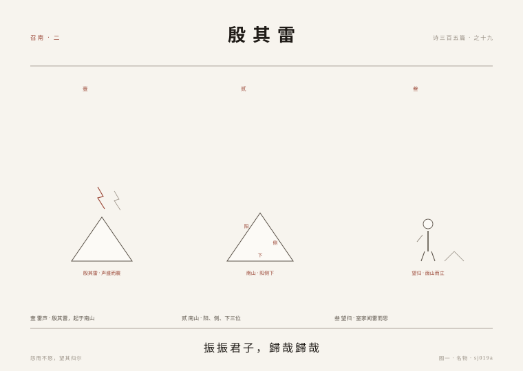
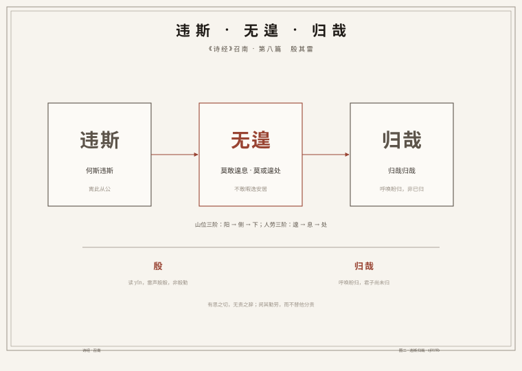

第十九篇 殷其雷
召南 · 之二 SJ019
朗读 · 普通话
依经文原文朗读，章次不读出；配古琴底乐，不改速、不加拖腔。全库同一音色（豆包 TTS），非播音员录制。
一 解题
诗三判：
- 谁在说：一个目送丈夫服役出门、闻雷而思归的妻子。三章闻雷望山，句句唤他回来。
- 说什么事：雷声殷殷，在南山之阳、之侧、之下；此人为何离去，无暇闲暇、无暇休息、无暇安居；振振君子，归哉归哉。
- 为何编在此：召南写「已成之后靠什么维持」，此篇写维持中的牵念——家人在外从公，家中望归。怨而不怒，是召南的分寸。
《毛序》：「《殷其雷》，劝以义也。大夫远行从政，不遑宁处，其室家能闵其勤劳，劝以义也。」——系于大夫从政，室家闵劳劝义。
朱子《诗集传》：「妇人以其君子从役在外，而思念之，故言殷其雷……冀其归也。」——朱子从思妇望归立说，与「归哉」相应。
本库的看法：这首诗的骨在「雷起南山而望役者归，何斯违斯，怨而不怒」。
雷声起处即望归之处；三章只换山位与暇息之名，呼唤只是一句「归哉归哉」。有思之切，无责之辞。
二 经文
第一章
殷其雷，在南山之陽。何斯違斯，莫敢或遑？振振君子，歸哉歸哉！
第二章
殷其雷，在南山之側。何斯違斯，莫敢遑息？振振君子，歸哉歸哉！
第三章
殷其雷，在南山之下。何斯違斯，莫或遑處？振振君子，歸哉歸哉！
分章：毛传、朱子皆三章，章六句。三章章法全同：雷声起于山之三位（阳、侧、下），一问违离，一叹不遑，一唤归。复沓之中，山由阳而侧而下，望亦由远而近。
三 韵读
| 一 |
陽、遑 |
阳部 |
| 二 |
側、息 |
职部 |
| 三 |
下、處 |
鱼部 |
首章阳部开阔，次章职部短促，三章鱼部舒缓收束。末章「处」字与「归」相应：无处可安居，故唤其归；「归哉」是全篇落脚声。
四 字义名物
- 殷（yǐn）——雷声殷殷，声盛而震。不是「殷勤」之殷。
- 其——语助，无实义。
- 陽——山南向日之地。
- 何斯違斯——为何此人离去此地。斯，此（前斯指人，后斯指所居）；違，离也。
- 遑——闲暇。莫敢或遑：不敢稍有闲暇。
- 振振（zhēn
zhēn）——奋起信厚之貌；一说仁厚。不是「振作」之振单用。
- 君子——所思之人，其夫。
- 歸哉歸哉——呼唤之辞，盼其归来。是呼唤，非已归。
- 側——山旁。
- 遑息——暇息，休息。
- 下——山足。
- 遑處——暇居，安居。莫或遑处：无人得安居。
五 今译
第一章
雷声殷殷，在南山之阳。为何这人离了此地，不敢稍有闲暇？振振君子，回来啊，回来啊！
第二章
雷声殷殷，在南山之旁。为何这人离了此地，不得闲暇休息？振振君子，回来啊，回来啊！
第三章
雷声殷殷，在南山之下。为何这人离了此地，不得安居？振振君子，回来啊，回来啊！
译注：「违斯」译「离了此地」，「遑」译「闲暇」；「归哉归哉」是盼归的呼唤，不作已归之事写。「振振」译「振振」存其貌，解为奋起信厚。
六 章旨
一章：雷在山南。山阳雷起，闻雷思人；人无暇逸。
二章：雷在山旁。由阳而侧，声更近；人不得息。
三章：雷在山下。由侧而下，望至山足；人不得安居。
三章合起来：山位三阶是阳→侧→下，人劳三阶是遑→息→处。
雷愈近，望愈切；呼唤始终是「归哉」一句。
七 诗教
- 兴：以雷声起兴；雷出地奋，动而思归，所兴即所望。
- 观：可观一「闵」。闵其勤劳，而不替他分责；思之深，待之恕。
- 群：一家之望，通于行役之众；读此诗者各有其等待之人。
- 怨：怨而不怒。有「何斯违斯」之问，无一句责其不归；怨在家念，不在怼人。
八 分寸与边界
- 不可把「殷」读作殷勤之殷。此状雷声，读 yǐn。
- 不可把「归哉归哉」读作已经归来。这是呼唤盼归，诗中君子尚在行役。
- 不可把「斯」解作斯文、此这个之外的虚义。前斯指人，后斯指居处；「违斯」即离此。
- 不可把「振振」解为单字「振作」。叠字状奋起信厚之貌，是称其君子之气象。
- 不可把此篇读成怨妇骂夫之辞。《序》「劝以义」虽可存背景，诗本文只有闻雷、问违、唤归；无怼怒，无追咎。
九 存疑
- 说者身份：朱子以为行役者之妻，《毛序》以为室家闵劳；一说为亲友送别之诗。本库取思妇望归。
- 「振振」之训：一说奋起（振起），一说信厚仁厚，一说盛貌。本库两存「奋起信厚」。
- 雷之取义：一说雷动而兴念，一说雷下有威、喻君上之命不敢违。本库取兴念，存威命之说。
- 「何斯违斯」之问：一问为何离去，一说叹其不得不去。本库取「为何离此」之问，怨而不怒。
- 编次之疑：此篇与《草虫》同为思人之诗；一在未见既见之间，一在役久望归之时。本库存其先后对读，不疑篇次。
十 跨典
- 《召南·草虫》「未见君子，忧心忡忡」——同卷思人之诗；彼写未见既见之心，此写行役望归之唤。
- 《王风·君子于役》「君子于役，不知其期，曷至哉」——同是室家望役者归；彼写日夕鸡栖之景，此写雷声在山之候。
- 《小雅·采薇》「昔我往矣，杨柳依依」——行役之诗；彼为役者自述，此为家中相望。
- 《诗经·大雅·卷阿》「振振公子」——「振振」叠字之他见，可对看其气象。
- 《礼记·孔子闲居》「天无私覆，地无私载」——行役从公之义；此篇闵劳而不废其事，正是公私有别。
十一 双卡与图
双卡五对：
| 殷（雷声殷殷） |
殷勤（误训） |
| 阳（山南） |
侧（山旁） |
| 違（离也） |
斯（此：人／居） |
| 遑（闲暇） |
息（休息） |
| 归哉（呼唤盼归） |
已归（误读） |

图一 · 雷声·南山·望归 名物图

图二 · 违斯 · 无遑 · 归哉 义理图
读图三处：
- 雷在山上空，不在云下特写：左格画山脊与数道雷声折线；雷声是起兴，不画乌云暴雨。
- 山分三位：中二格同一山，标出阳（南坡）、侧（山旁）、下（山足）；三章换的是位置，不是三座山。
- 望归之人立于山这一边：右格画一人面山而立；人在室内望山，不画出门追远。